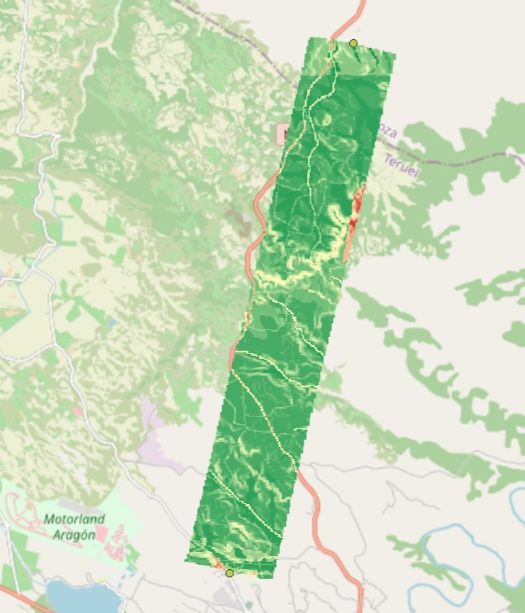
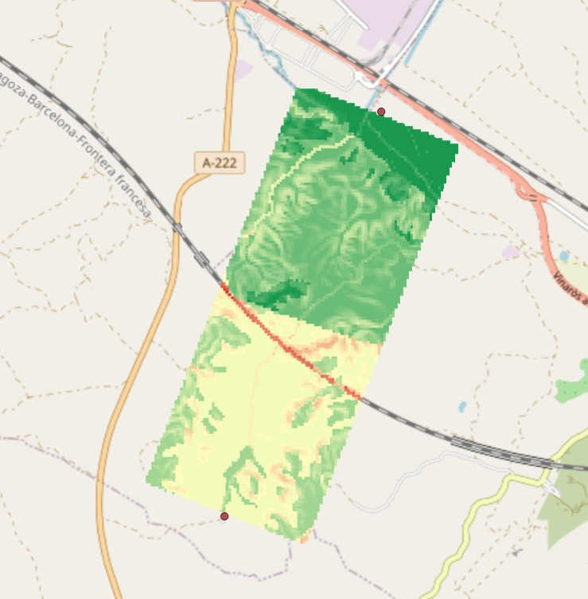

Prototipo geoespacial que propone 3–5 trazados alternativos diferenciados entre planta y red troncal, comparados por criterios objetivos sobre GIS público.
Primer hito cerrado. Hemos reunido y alineado seis capas GIS públicas a un CRS y rejilla comunes (EPSG:25830 · ~30 m). Cada fuente es clicable y enlaza a su origen oficial.
| Capa · qué aporta | Fuente pública | Ámbito |
|---|---|---|
| Elevación (DEM) pendiente del terreno | OpenTopography Copernicus GLO-30 | por zona |
| Viario y ferrocarril cruces e infraestructura | OpenStreetMap | por zona |
| Hidrografía cruces de ríos | IGN · CNIG | por zona |
| Litología geotecnia del terreno | IGME · MAGNA 50 | nacional |
| Zonas protegidas Red Natura 2000 | MITECO | nacional |
| Parcelas (usos del suelo) expropiación · rústica + urbana | Catastro · DGC requiere firma electrónica | por municipio |
Descarga vía WFS / WCS / Overpass desde IGN, Copernicus, IGME, MITECO y Catastro. Reproducible por escenario.
Recorte al AOI, reproyección a EPSG:25830 y remuestreo a rejilla común de ~30 m. La celda (i,j) significa lo mismo en todas.
Derivadas de las 6 capas: pendiente, geotecnia (IGME), cruces (OSM + hidrografía), zonas protegidas y expropiación (catastro).
Suma lineal de capas por perfil + propagación de coste prohibido (∞). Base lista para el cálculo del trazado.
Superficie de coste combinada de cada corredor, visualizada en QGIS sobre el AOI. El verde es terreno barato de atravesar; el rojo, celdas muy desfavorables (cruces, fuerte pendiente, suelo sensible).


Todos resuelven el mismo problema de mínimo coste origen→destino; cambia el criterio que prioriza cada perfil. Subir el peso de un criterio cambia la superficie de coste y, con ella, la ruta óptima.
Prioriza: la distancia. El trazado más directo posible.
Cómo: peso alto en longitud; tolera más pendiente e impacto.
Prioriza: evitar Red Natura 2000 y suelo sensible.
Cómo: peso alto en zona protegida, aunque alargue.
Prioriza: terreno llano → obra más barata y simple.
Cómo: peso alto en pendiente.
Prioriza: el compromiso entre todos los criterios. Recomendado.
Cómo: pesos balanceados.
Corridor masking: al generar cada ruta nueva penalizamos la cercanía a las ya creadas (franja de 500 m) y solo la aceptamos si su solapamiento con las demás es < 30%. Así las cuatro son alternativas reales, no el mismo corredor repetido.
Estos dos parámetros gobiernan el trazado de mínimo coste. Vuestra validación es la palanca que ajusta el modelo a la realidad de Enagás.
Una tabla por capa. Índice 0 = ideal → 1 = muy desfavorable.
| 0 – 5° (llano) | 0.0 |
| 5 – 15° | 0.0→0.6 |
| 15 – 30° | 0.6→1.0 |
| > 30° | ∞ |
| Rúst. improductivo | 0.1 |
| Rúst. secano | 0.2 |
| Rúst. regadío | 0.5 |
| Urbanizable | 0.9 |
| Urbano consolidado | 1.0 |
| Camino / pista | 0.2 |
| Carretera → autovía | 0.5→0.8 |
| Ferrocarril | 0.9 |
| Río menor / principal | 0.5 / 0.8 |
| Dentro | 1 |
| Fuera | 0 |
Los pesos w combinan las capas en el coste de cada celda; el trazado (LCP) minimiza el coste total del recorrido:
| Perfil | Long. | Pend. | Uso | Prot. |
|---|---|---|---|---|
| Más corto | 1.0 | 0.2 | 0.2 | 0.3 |
| Menor impacto | 0.3 | 0.2 | 0.5 | 1.0 |
| Menor pendiente | 0.3 | 1.0 | 0.3 | 0.4 |
| Equilibrio ★ rec. | 0.5 | 0.5 | 0.4 | 0.6 |
El valor resaltado es el criterio dominante de cada perfil. ¿Cambiaríais alguna prioridad o añadiríais un perfil (p. ej. "mínimos cruces")?
💬 Coste y pesos son los dos parámetros que más condicionan el resultado: queremos calibrarlos con vuestro criterio antes del Sprint 5.
Con los datos y las superficies de coste listos, el próximo paso inmediato es generar el primer trazado automático origen→destino.
Un primer trazado dibujado sobre el AOI, reproducible y trazable a las capas de coste validadas hoy.
Nos llevamos vuestro criterio sobre los costes por atributo y los pesos por capa para calibrar el modelo antes del Sprint 5. Preguntas, dudas y comentarios, todos bienvenidos.